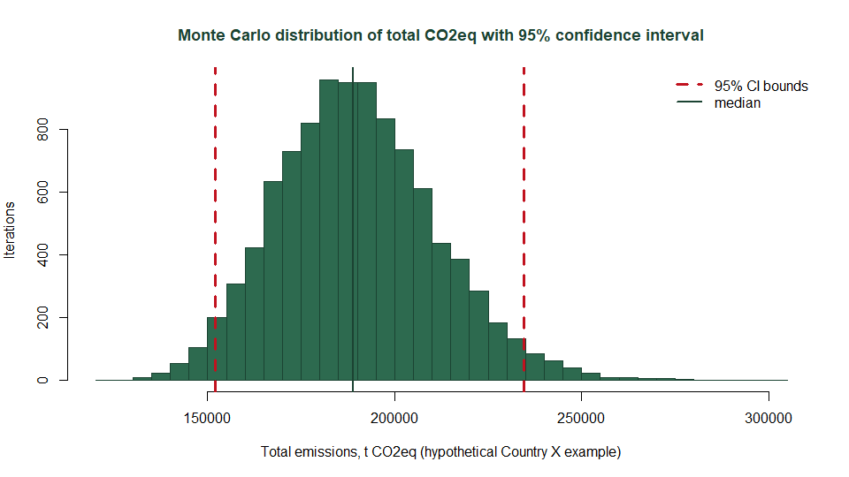
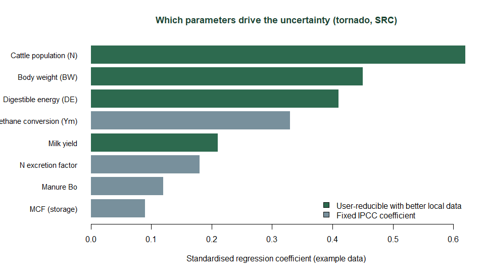

Many countries cannot currently undertake uncertainty analysis. The IPCC Tier 2 equations require Monte Carlo simulation, but inventory compilers rarely have the statistical tooling for it: commercial software is expensive, and the free alternatives cannot show which parameters actually drive the uncertainty. This tool is free, needs no statistical background, and ranks the parameters where better data would most improve your inventory.
What the calculator gives you
Three results, each answering a question a national inventory report has to address.
1. A confidence interval on your reported total
The calculator propagates the uncertainty of every input through the full IPCC Tier 2 equation chain (2006 Guidelines, Vol. 4, Ch. 10 and 11) by Monte Carlo simulation. It then reports the 95% confidence interval on your inventory total, together with the margin of error as a percentage of the mean, which is the form IPCC Table 3.3 asks for.

2. The split between activity data and emission factors
Table 3.3 asks for activity-data uncertainty and emission-factor uncertainty separately, as well as combined. The calculator produces all three for each emission source by repeating the simulation with one group of inputs held at its central values. These per-category figures can be entered directly into the uncertainty worksheet of the IPCC Inventory Software.
3. A ranking of what drives the uncertainty
A sensitivity analysis ranks every input by how much it contributes to the spread in the result, and distinguishes the parameters you could improve with better national data from the IPCC default coefficients you cannot. This is what turns an uncertainty estimate into a plan, because it shows where further data collection would narrow the interval most.

Who is it for?
National inventory compilers preparing Biennial Transparency Reports, Biennial Update Reports and National Inventory Reports under the UNFCCC Enhanced Transparency Framework, and the researchers, consultants and MRV practitioners who support them. If your cattle inventory uses Tier 2, or is moving to it, and you need Approach 2 (Monte Carlo) uncertainty rather than Approach 1 error propagation, it was built for your case.
The results also serve a wider purpose. Knowing which parameters dominate the uncertainty shows governments and development partners where data collection and mitigation investment will have most effect, and better-quantified inventories support more credible tracking of progress under Nationally Determined Contributions.
How do I quantify uncertainty in my national livestock GHG inventory?
In three steps, with no coding and no statistical software.
- Prepare your data. Download the Excel template, which carries dropdowns and IPCC default values, and enter your animal sub-categories, populations, body weights, feed quality and manure-management shares. If your national data is held in a different shape, a built-in assistant will map it into the template for you.
- Review the uncertainty ranges. Every parameter arrives with a default range and distribution drawn from the IPCC guidance, which you adjust to reflect your own data and its sources. That judgement stays with you: the calculator propagates the uncertainty you give it rather than estimating it.
- Run and export. Choose the number of iterations and the GWP set, run the simulation, then download the results as Excel, CSV or a formatted Word report. Two example inventories, one dairy and one pastoral, are pre-loaded, so you can work through the whole sequence before using your own data.
What does the calculator cover?
| Aspect | Detail |
|---|---|
| Emission sources | Enteric fermentation CH4, manure management CH4, direct and indirect N2O from managed manure, direct and indirect N2O from pasture, range and paddock deposition |
| Methodology | IPCC 2006 Guidelines Vol. 4 Ch. 10 and 11 (Tier 2 energy-balance equation chain); 2019 Refinement values supported |
| Uncertainty method | IPCC Approach 2: Monte Carlo simulation (10,000+ iterations, configurable), with rank-correlation-preserving sampling of correlated parameters per IPCC Vol. 1 Ch. 3 |
| Decomposition | Activity data vs emission factor vs combined uncertainty, per source, as IPCC Table 3.3 expects |
| Sensitivity analysis | Standardised regression coefficients (SRC) and partial rank correlation (PRCC) tornado charts |
| Trend uncertainty | Multi-year Monte Carlo with year-to-year correlation of emission factors |
| Outputs | IPCC Table 3.3 formatted Excel and CSV, plus a complete Word report with all charts. Designed to complement the IPCC Inventory Software: the per-category AD and EF uncertainty values can be entered straight into its uncertainty worksheet |
| Data entry | Excel template with dropdowns and IPCC defaults, or a built-in AI assistant that converts raw country files into the template |
| Cost | Free and open source (MIT); runs in the browser with no installation or account |
Learn more
Citation
Alliance of Bioversity International and CIAT (CGIAR) (2026). IPCC Tier 2 Livestock GHG Uncertainty Calculator (software). github.com/CGIAR-Climate-Data-Hub/cattle-ghg-uncertainty